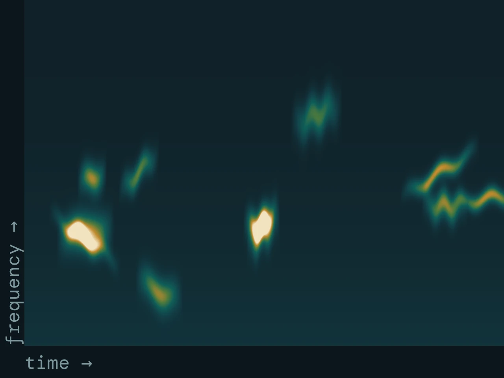
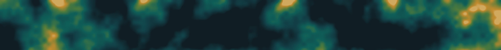

Guillermo Fandos
Dept. Biodiversidad, Ecología y Evolución Universidad Complutense de Madrid
Guillermo Fandos
How far animals move, and why individuals of the same species move so differently.
I am a spatial ecologist interested in the processes that drive the distribution and abundance of animal populations. My work combines fieldwork, large-scale data synthesis and quantitative modelling to tackle questions in conservation biology, biogeography and movement ecology. Assistant Professor at the Universidad Complutense de Madrid.

Fig. 1
Schematic. Simulated natal dispersal from one ringing site. Most trajectories end close to the origin; a few, in ochre, travel an order of magnitude farther. That heavy tail is what makes dispersal hard to estimate and easy to underestimate. Not fitted to data.
Research
Linking individual movement to where species end up
Data
EURING ring recoveries
National ringing schemes
Animal movement in dynamic landscapes
How do daily movements, seasonal migration and lifetime dispersal events shape population connectivity, range boundaries and species responses to environmental change? I use bird ringing data and Bayesian methods to estimate dispersal kernels and ask what they mean.

Data
Citizen science (eBird)
Monitoring surveys · Ring recoveries
Improving biodiversity monitoring and modelling
Effective conservation requires well-designed monitoring and the capacity to anticipate future changes. I develop species distribution models that incorporate ecological processes (dispersal, population dynamics, species interactions) and integrate data sources that were never designed to be combined.

Data and methods
Black Stork monitoring (22 yr)
Distribution models
Landscape connectivity
Conservation under global change
Habitat degradation and climate change are altering species distributions worldwide. I work on anticipating which species face the greatest threats, understanding why, and identifying where and when problems will emerge: from large carnivore recolonisation in Iberia to mammal declines in the Gran Chaco.

Data
AudioMoth recorders
Camera-trap networks
Field technology for monitoring
Camera trapping, bioacoustic monitoring with AudioMoth devices, and other sensor-based approaches for wildlife monitoring. I am developing field technology pipelines for biodiversity assessment, in collaboration with Raúl Bonal on bioacoustics.


Projects
Funded work in progress
INTRADISP
Why individuals of one species disperse differently
Synthesising intraspecific dispersal variation using European bird ringing data to improve predictions of biodiversity responses to global change.
RIMed-Fauna
Wildlife in Mediterranean rivers
Mediterranean rivers flood in winter and run dry in summer. Camera trapping and distribution modelling in National Parks to see how terrestrial wildlife copes with that variability.
SHAREPOINT
Selected publications
Recent work
2026 Dispersal
Dispersal syndromes across the tree of life
Fandos G, Robinson RA, Zurell D · Communications Biology
2023 Dispersal
Fandos G, Talluto M, Fiedler W, Robinson RA, Thorup K, Zurell D · Journal of Animal Ecology 92: 158–170
2023 Conservation
Pratzer M, Nill L, Kuemmerle T, Zurell D, Fandos G · Diversity and Distributions 29: 75–88
2021 Conservation
Romero-Muñoz A, Fandos G, Benítez-López A, Kuemmerle T · Global Change Biology 27: 755–767
2020 Movement
Seasonal niche tracking of climate emerges at the population level in a migratory bird
Fandos G, Rotics S, Sapir N, Fiedler W, Kaatz M, Wikelski M, Nathan R, Zurell D · Proceedings of the Royal Society B 287: 20201799
2020 Methods
A standard protocol for reporting species distribution models
Zurell D, Franklin J, König C, …, Fandos G, …, Merow C · Ecography 43: 1261–1277
News
Lately
Feb 2026
New paper in Communications Biology: Dispersal syndromes across the tree of life (Fandos et al. 2026).
Feb 2026
In Vienna for the EUFLYNET COST Action meeting on bird migration research.
2025
Welcome to David Notario and Claudia Mediavilla, joining as researchers on INTRADISP and RIMed-Fauna.
Social organisation and parasite sharing
Rainforest understory birds in French Guiana: field-based research combining network analysis with disease ecology.